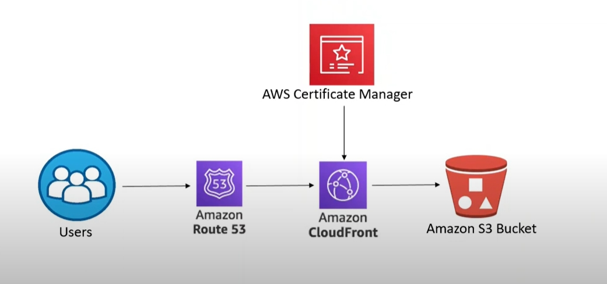

S3 static web

LƯU Ý PHÍA DƯỚI LÀ CHATGPT NÊN LÊN YOUTUBE GÕ CICD HOST STATIC WEBSITE AWS LÀ NÓ LÊN CẢ MỚI ANH ẤN ĐỘ XEM BỪA RỒI LÀM LAB THÔI
Cập nhật tối ưu hệ thống S3 và CloudFront với SSL + Route 53
1. Tạo S3 Bucket và tối ưu cấu hình
- Tạo Bucket:
- Tên bucket nên phù hợp với domain, ví dụ:
frontend.mywebsite.com. - Bật tính năng Static Website Hosting.
-
Tắt toàn bộ quyền public trực tiếp từ S3 (CloudFront sẽ quản lý quyền công khai).
-
Thêm Bucket Policy giới hạn truy cập qua CloudFront:
- Sử dụng Origin Access Control (OAC) để đảm bảo chỉ CloudFront mới có quyền truy cập S3.
- Tạo OAC qua AWS Console:
- Trong CloudFront, chọn "Create OAC" và gán quyền cho bucket.
- Bucket Policy (sử dụng OAC):
json { "Version": "2012-10-17", "Statement": [ { "Effect": "Allow", "Principal": { "Service": "cloudfront.amazonaws.com" }, "Action": "s3:GetObject", "Resource": "arn:aws:s3:::frontend.mywebsite.com/*", "Condition": { "StringEquals": { "AWS:SourceArn": "arn:aws:cloudfront::YOUR_ACCOUNT_ID:distribution/YOUR_DISTRIBUTION_ID" } } } ] }
2. Tạo CloudFront Distribution
- Origin:
- Trỏ đến bucket S3.
-
Sử dụng OAC vừa tạo để thiết lập quyền truy cập.
-
Cài đặt quan trọng:
- Viewer Protocol Policy: Redirect HTTP to HTTPS.
- Default TTL: Tùy chỉnh cache, ví dụ
3600 giây. - Compress Objects Automatically: Bật gzip hoặc Brotli để tăng hiệu suất tải file.
-
Custom Error Pages: Thêm trang 404 hoặc 403 từ S3.
-
Thêm SSL từ ACM:
-
Trong CloudFront > Distribution Settings:
- Chọn
Custom SSL Certificate. - Sử dụng chứng chỉ từ ACM (bước 3).
- Chọn
-
Enable Cache Invalidation:
- Đảm bảo CloudFront hỗ trợ xóa cache sau mỗi lần deploy (dùng API).
3. Cấu hình ACM cho SSL
- Tạo chứng chỉ SSL:
- Truy cập AWS Certificate Manager (ACM).
- Chọn Request a public certificate.
-
Nhập domain chính (e.g.,
mywebsite.com) và subdomain (e.g.,*.mywebsite.com). -
Xác minh chứng chỉ:
- Nếu sử dụng Route 53, ACM sẽ tự động thêm bản ghi DNS để xác minh.
- Sau khi xác minh, chứng chỉ sẽ ở trạng thái "Issued".
4. Gắn Route 53 với CloudFront
- Tạo hoặc quản lý Hosted Zone:
-
Trong Route 53, tạo Hosted Zone cho domain
mywebsite.com. -
Thêm bản ghi CNAME hoặc A (Alias):
- Trỏ từ tên miền
frontend.mywebsite.comđến CloudFront:- Type: A (Alias).
- Alias Target: Chọn CloudFront Distribution.
- Tất cả truy cập qua domain sẽ được chuyển tới CloudFront.
5. Cập nhật Pipeline Jenkins
Thay đổi Pipeline để hỗ trợ cache invalidation và sử dụng Route 53
Trong file Jenkinsfile, thêm bước Invalidate CloudFront Cache và cập nhật domain sử dụng Route 53.
pipeline {
agent any
environment {
S3_BUCKET = 'frontend.mywebsite.com'
CLOUDFRONT_DISTRIBUTION_ID = 'YOUR_DISTRIBUTION_ID'
}
stages {
stage('Checkout') {
steps {
git branch: 'main', url: 'https://github.com/your-repo/frontend.git'
}
}
stage('Build') {
steps {
sh 'npm install'
sh 'npm run build'
}
}
stage('Upload to S3') {
steps {
sh '''
aws s3 sync ./build s3://$S3_BUCKET --delete
'''
}
}
stage('Invalidate CloudFront Cache') {
steps {
sh '''
aws cloudfront create-invalidation --distribution-id $CLOUDFRONT_DISTRIBUTION_ID --paths "/*"
'''
}
}
}
}
6. Bảo mật nâng cao
- Bật Logging cho CloudFront:
-
Sử dụng S3 bucket khác để lưu trữ log từ CloudFront (giám sát lỗi và phân tích lưu lượng).
-
Tích hợp WAF (Web Application Firewall):
-
Dùng AWS WAF để bảo vệ CloudFront khỏi các tấn công DDoS hoặc tấn công injection.
-
Giám sát CloudWatch:
- Tạo dashboard CloudWatch để theo dõi lượng request, tỷ lệ cache hit/miss và lỗi.
7. Kiểm tra cuối cùng
- Truy cập qua domain:
- Đảm bảo
https://frontend.mywebsite.comhoạt động bình thường. -
Kiểm tra HTTPS, tốc độ tải, và các tính năng cache.
-
Giả lập các tình huống lỗi:
- Tạo lỗi 404 hoặc 403 và kiểm tra xử lý từ CloudFront.
Tóm tắt tối ưu
- Route 53 gắn CloudFront: Tăng hiệu suất và sử dụng SSL qua ACM.
- OAC trong S3: Đảm bảo chỉ CloudFront có quyền đọc file.
- Pipeline Jenkins: Triển khai tự động với cache invalidation.
- WAF và Logging: Tăng bảo mật và giám sát.